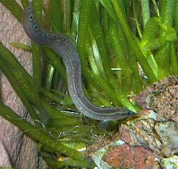

Макрогнатус
Добывая мотылей макрогнатус зарывается в грунт вниз головой, так что виден только извивающийся пятнистый хвост. Часто макрогнатус сидит в грунте, и видна только голова. Ему нравится сидеть полузарывшись и наблюдать.
Мои макрогнатусы едят только живого или замороженного мотыля. Бывает, что весь месяц приходится давать рыбкам сухой корм. Макрогнатусы на это не реагируют. Но чем-то наверно всё же питаются. Я подозреваю, что в грунте есть незаметные червячки. Хотя их немного, я не видел, но макрогнатусам хватает. Аппетит у них скромный, не то, что у мастоцембела.